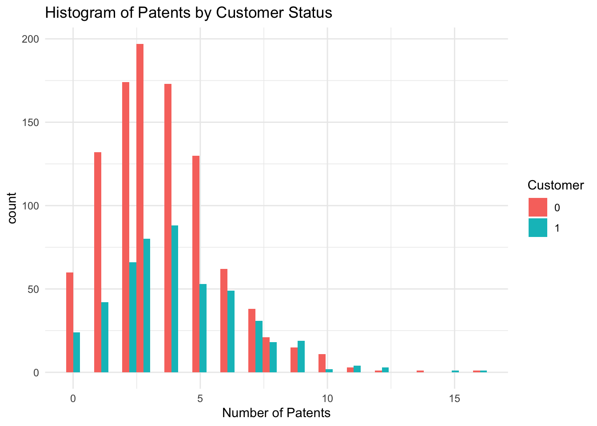
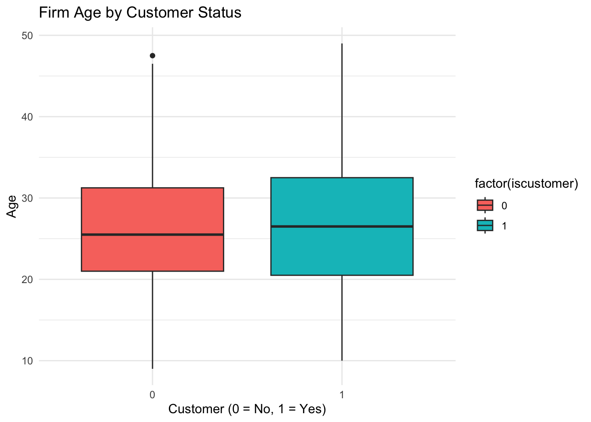
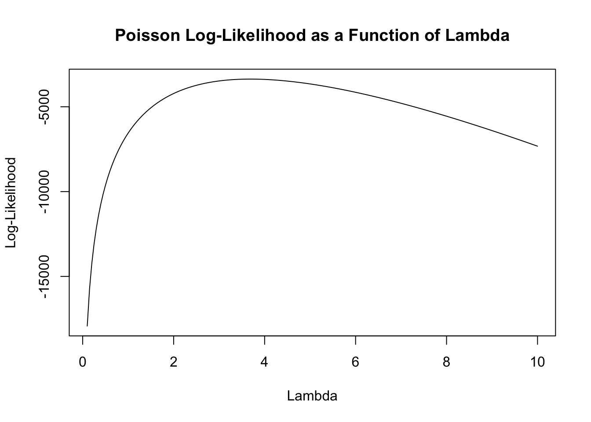

Blueprinty is a small firm that makes software for developing blueprints specifically for submitting patent applications to the US patent office. Their marketing team would like to make the claim that patent applicants using Blueprinty’s software are more successful in getting their patent applications approved. Ideal data to study such an effect might include the success rate of patent applications before using Blueprinty’s software and after using it. Unfortunately, such data is not available.
However, Blueprinty has collected data on 1,500 mature (non-startup) engineering firms. The data include each firm’s number of patents awarded over the last 5 years, regional location, age since incorporation, and whether or not the firm uses Blueprinty’s software. The marketing team would like to use this data to make the claim that firms using Blueprinty’s software are more successful in getting their patent applications approved.
Blueprinty customers are not selected at random. It may be important to account for systematic differences in the age and regional location of customers vs non-customers.
library(ggplot2)ggplot(df, aes(x = patents, fill =factor(iscustomer))) +geom_histogram(position ="dodge",bins =30) +labs(title ="Histogram of Patents by Customer Status",x ="Number of Patents", fill ="Customer") +theme_minimal()

aggregate(patents ~ iscustomer, data = df, mean)
iscustomer patents
1 0 3.473013
2 1 4.133056
The histogram shows a right-skewed distribution of patents for both Blueprinty customers and non-customers, with the majority of firms holding between 0 and 6 patents. However, the distribution for customers appears slightly shifted to the right, suggesting that they tend to have more patents on average. Non-customers have an average of 3.47 patents.Customers have a higher average of 4.13 patents. This difference suggests that Blueprinty customers tend to have more patents than non-customers. However, because customers are not randomly assigned, this observed difference may be influenced by systematic differences in firm characteristics—such as age or region. A more rigorous model (e.g., regression) is necessary to isolate the potential causal effect of using Blueprinty’s software.
To better understand potential selection bias, we now examine how firm characteristics—specifically age and regional location—differ by customer status. This helps us assess whether Blueprinty customers are systematically different from non-customers.
ggplot(df, aes(x =factor(iscustomer), y = age, fill =factor(iscustomer))) +geom_boxplot() +labs(title ="Firm Age by Customer Status",x ="Customer (0 = No, 1 = Yes)", y ="Age") +theme_minimal()

aggregate(age ~ iscustomer, data = df, mean)
iscustomer age
1 0 26.10157
2 1 26.90021
Age The boxplot shows that Blueprinty customers and non-customers have similar age distributions, though customers tend to be slightly older. The average age of customers is 26.90 years, while non-customers average 26.10 years. This suggests that customers are marginally more established on average.
ggplot(df, aes(x = region, fill =factor(iscustomer))) +geom_bar(position ="fill") +labs(title ="Region Distribution by Customer Status",x ="Region", y ="Proportion", fill ="Customer") +theme_minimal()
Region The stacked bar plot and proportion table reveal notable differences in regional composition: In the Northeast, over 54% of firms are Blueprinty customers — the only region where customers outnumber non-customers. In all other regions (Midwest, Northwest, South, Southwest), customers make up roughly 15%–18% of firms.
Estimation of Simple Poisson Model
Since our outcome variable of interest can only be small integer values per a set unit of time, we can use a Poisson density to model the number of patents awarded to each engineering firm over the last 5 years. We start by estimating a simple Poisson model via Maximum Likelihood.
Formula for_ \(Y \sim \text{Poisson}(\lambda)\): \(f(Y|\lambda) = e^{-\lambda}\lambda^Y/Y!\).
\[
\ell(\lambda) = \sum_{i=1}^n \left( -\lambda + y_i \log \lambda - \log y_i! \right)
\] To estimate the Poisson model, we begin by expressing its likelihood mathematically and implementing the corresponding log-likelihood function in R.
With the log-likelihood function defined, we now visualize how it behaves across a range of λ values using the observed patent counts as input.
Y <- df$patents
lambda_values <-seq(0.1, 10, length.out =200)log_likelihoods <-sapply(lambda_values, poisson_loglikelihood, Y = Y)plot(lambda_values, log_likelihoods, type ="l",xlab ="Lambda", ylab ="Log-Likelihood",main ="Poisson Log-Likelihood as a Function of Lambda")

Mathematically, we begin with the log-likelihood function for independent and identically distributed observations from a Poisson distribution:
This tells us that the MLE of \(\lambda\) is simply the sample mean \(\bar{Y}\), which is intuitive since \(\lambda\) represents the expected count in a Poisson distribution.
While the analytical solution provides an exact MLE for \(\lambda\), we now turn to a numerical approach by optimizing the log-likelihood function using optim() in R.
neg_loglikelihood <-function(lambda, Y) {if (lambda <=0) return(Inf) n <-length(Y)-(-n * lambda +sum(Y) *log(lambda) -sum(lgamma(Y +1)))}result <-optim(par =1, fn = neg_loglikelihood, Y = Y, method ="Brent", lower =0.001, upper =20)lambda_mle <- result$parcat("MLE for lambda:", lambda_mle, "\n")
MLE for lambda: 3.684667
Estimation of Poisson Regression Model
Next, we extend our simple Poisson model to a Poisson Regression Model such that \(Y_i = \text{Poisson}(\lambda_i)\) where \(\lambda_i = \exp(X_i'\beta)\). The interpretation is that the success rate of patent awards is not constant across all firms (\(\lambda\)) but rather is a function of firm characteristics \(X_i\). Specifically, we will use the covariates age, age squared, region, and whether the firm is a customer of Blueprinty.
To model variation in patent counts as a function of firm characteristics, we extend the Poisson model to include covariates. We update our log-likelihood function to depend on a parameter vector \(\beta\), with \(\lambda_i = e^{X_i'\beta}\) to ensure positivity.
poisson_regression_loglikelihood <-function(beta, Y, X) { eta <- X %*% beta lambda <-exp(eta) log_lik <-sum(Y *log(lambda) - lambda -lgamma(Y +1))return(-log_lik)}
With the Poisson regression log-likelihood function defined, we now estimate the model parameters by optimizing the function using optim() in R. We include a constant term and relevant covariates—age, age squared, region dummies, and customer status—and use the resulting Hessian matrix to compute standard errors for the estimated coefficients.
df$age2 <- df$age^2df$region <-factor(df$region)X <-model.matrix(~ age + age2 + region + iscustomer, data = df)
init_beta <-rep(0, ncol(X)) fit <-optim(par = init_beta,fn = poisson_regression_loglikelihood,Y = Y, X = X,method ="BFGS", hessian =TRUE)
To validate our custom MLE implementation, we now fit the same Poisson regression model using R’s built-in glm() function with a log link and compare the estimated coefficients and standard errors.
poisson_model <-glm(patents ~ age + age2 + region + iscustomer,family =poisson(link ="log"),data = df)summary(poisson_model)
Call:
glm(formula = patents ~ age + age2 + region + iscustomer, family = poisson(link = "log"),
data = df)
Coefficients:
Estimate Std. Error z value Pr(>|z|)
(Intercept) -0.508920 0.183179 -2.778 0.00546 **
age 0.148619 0.013869 10.716 < 2e-16 ***
age2 -0.002971 0.000258 -11.513 < 2e-16 ***
regionNortheast 0.029170 0.043625 0.669 0.50372
regionNorthwest -0.017574 0.053781 -0.327 0.74383
regionSouth 0.056561 0.052662 1.074 0.28281
regionSouthwest 0.050576 0.047198 1.072 0.28391
iscustomer 0.207591 0.030895 6.719 1.83e-11 ***
---
Signif. codes: 0 '***' 0.001 '**' 0.01 '*' 0.05 '.' 0.1 ' ' 1
(Dispersion parameter for poisson family taken to be 1)
Null deviance: 2362.5 on 1499 degrees of freedom
Residual deviance: 2143.3 on 1492 degrees of freedom
AIC: 6532.1
Number of Fisher Scoring iterations: 5
There are some difference between two methods. The custom MLE estimates obtained using optim() differ from the results produced by R’s built-in glm() function. This difference likely arises from issues related to how the model is specified or optimized. Specifically, glm() handles categorical variable encoding (such as dummy-coding for regions), intercepts, starting values, and optimization convergence using routines specifically designed for generalized linear models. These features make glm() highly robust and reliable.
While the iscustomer coefficient in the Poisson model is statistically significant, its interpretation on the log scale makes it less intuitive. To better understand the practical impact of Blueprinty’s software, we simulate counterfactual scenarios by predicting the number of patents for each firm assuming they were a customer versus not. This allows us to estimate the average treatment effect of being a Blueprinty customer.
model <-glm(patents ~ age +I(age^2) + region + iscustomer,family =poisson(link ="log"), data = df)data_0 <- dfdata_1 <- dfdata_0$iscustomer <-0data_1$iscustomer <-1y_pred_0 <-predict(model, newdata = data_0, type ="response")y_pred_1 <-predict(model, newdata = data_1, type ="response")effect <-mean(y_pred_1 - y_pred_0)cat("Average estimated effect of being a customer on patents:", round(effect, 4), "\n")
Average estimated effect of being a customer on patents: 0.7928
Based on the model, the average estimated effect of being a Blueprinty customer is approximately 0.79 additional patents per firm, holding all other firm characteristics constant. This suggests that, on average, Blueprinty customers are expected to have nearly one more patent than non-customers with similar profiles.
AirBnB Case Study
Introduction
AirBnB is a popular platform for booking short-term rentals. In March 2017, students Annika Awad, Evan Lebo, and Anna Linden scraped of 40,000 Airbnb listings from New York City. The data include the following variables:
Variable Definitions
- `id` = unique ID number for each unit
- `last_scraped` = date when information scraped
- `host_since` = date when host first listed the unit on Airbnb
- `days` = `last_scraped` - `host_since` = number of days the unit has been listed
- `room_type` = Entire home/apt., Private room, or Shared room
- `bathrooms` = number of bathrooms
- `bedrooms` = number of bedrooms
- `price` = price per night (dollars)
- `number_of_reviews` = number of reviews for the unit on Airbnb
- `review_scores_cleanliness` = a cleanliness score from reviews (1-10)
- `review_scores_location` = a "quality of location" score from reviews (1-10)
- `review_scores_value` = a "quality of value" score from reviews (1-10)
- `instant_bookable` = "t" if instantly bookable, "f" if not
To explore what drives booking activity on Airbnb, we use the number of reviews as a proxy for the number of bookings. We begin by performing exploratory data analysis, cleaning the dataset to handle missing values, and then fitting a Poisson regression model to explain variation in review counts based on listing characteristics.
Below is a overview of the data
data <-read.csv("airbnb.csv")head(data)
X id days last_scraped host_since room_type bathrooms bedrooms price
1 1 2515 3130 4/2/2017 9/6/2008 Private room 1 1 59
2 2 2595 3127 4/2/2017 9/9/2008 Entire home/apt 1 0 230
3 3 3647 3050 4/2/2017 11/25/2008 Private room 1 1 150
4 4 3831 3038 4/2/2017 12/7/2008 Entire home/apt 1 1 89
5 5 4611 3012 4/2/2017 1/2/2009 Private room NA 1 39
6 6 5099 2981 4/2/2017 2/2/2009 Entire home/apt 1 1 212
number_of_reviews review_scores_cleanliness review_scores_location
1 150 9 9
2 20 9 10
3 0 NA NA
4 116 9 9
5 93 9 8
6 60 9 9
review_scores_value instant_bookable
1 9 f
2 9 f
3 NA f
4 9 f
5 9 t
6 9 f
Creates a new data frame data_clean by selecting only the relevant variables. Uses na.omit() to remove any rows that have missing values in those columns. This ensures a clean dataset for modeling.
Transforms the instant_bookable column into a binary numeric variable: 1 if “t” (true), 0 otherwise (i.e., “f”). This makes the variable suitable for use in regression models.
Fits a Poisson regression model where the outcome is number_of_reviews (proxy for bookings), and predictors include listing age (days), listing features (room type, bathrooms, bedrooms, price), review scores (cleanliness, location, value), and instant_bookable. Specifies the Poisson family with a log link, which is standard for count data.
model <-glm(number_of_reviews ~ days + room_type + bathrooms + bedrooms + price + review_scores_cleanliness + review_scores_location + review_scores_value + instant_bookable,family =poisson(link ="log"), data = data_clean)summary(model)
Call:
glm(formula = number_of_reviews ~ days + room_type + bathrooms +
bedrooms + price + review_scores_cleanliness + review_scores_location +
review_scores_value + instant_bookable, family = poisson(link = "log"),
data = data_clean)
Coefficients:
Estimate Std. Error z value Pr(>|z|)
(Intercept) 3.498e+00 1.609e-02 217.396 < 2e-16 ***
days 5.072e-05 3.909e-07 129.757 < 2e-16 ***
room_typePrivate room -1.054e-02 2.738e-03 -3.847 0.000119 ***
room_typeShared room -2.463e-01 8.620e-03 -28.578 < 2e-16 ***
bathrooms -1.177e-01 3.749e-03 -31.394 < 2e-16 ***
bedrooms 7.409e-02 1.992e-03 37.197 < 2e-16 ***
price -1.791e-05 8.327e-06 -2.151 0.031485 *
review_scores_cleanliness 1.131e-01 1.496e-03 75.611 < 2e-16 ***
review_scores_location -7.690e-02 1.609e-03 -47.796 < 2e-16 ***
review_scores_value -9.108e-02 1.804e-03 -50.490 < 2e-16 ***
instant_bookable 3.459e-01 2.890e-03 119.666 < 2e-16 ***
---
Signif. codes: 0 '***' 0.001 '**' 0.01 '*' 0.05 '.' 0.1 ' ' 1
(Dispersion parameter for poisson family taken to be 1)
Null deviance: 961626 on 30159 degrees of freedom
Residual deviance: 926886 on 30149 degrees of freedom
AIC: 1048375
Number of Fisher Scoring iterations: 9
The model suggests that cleanliness, bedrooms, and instant booking availability are strong drivers of review volume. Conversely, shared room types, more bathrooms, and possibly higher prices tend to be associated with lower review counts. It depends on the coefficients of the predictors. If the coefficients are positive, they lead to more reviews.